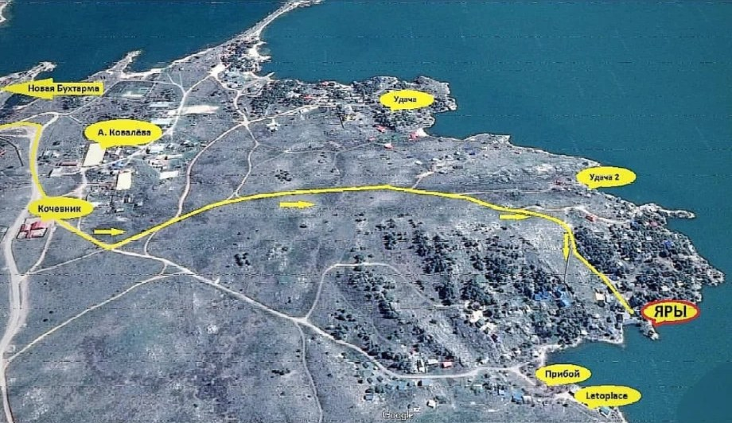

Главная / Как проехать
Расположение
Как проехать
База «Яры» стоит на берегу Бухтарминского водохранилища в Восточно-Казахстанской области — в 6 километрах от посёлка Новая Бухтарма.

Схема проезда от Новой Бухтармы. Нажмите, чтобы увеличить.
Маршрут от Новой Бухтармы
- Доезжаете до посёлка Новая Бухтарма и двигаетесь в сторону баз отдыха.
- У ориентира «Кочевник» поворачиваете на дорогу вдоль берега — она отмечена жёлтой линией на схеме.
- Проезжаете мимо баз «Удача» и «Удача 2», держитесь основной дороги.
- Спускаетесь к заливу — «Яры» на самом берегу, по соседству с базами «Прибой» и «Letoplace».
Территория
Схема базы
Домики пронумерованы — на фото с высоты видно, какой стоит у воды, а какой повыше, с видом на залив. Домик администратора — в центре базы.
- №1, №2, №3 — у самой воды
- №4, №5, №12 — на возвышенности, с видом
- №7–№11, №14 — в сосновой части базы